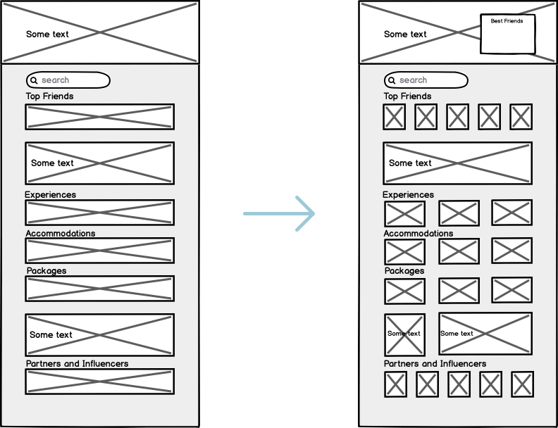

Tugolo
Tugolo allows travelers to easily find, customize and book their trip, provided
entirely by a local. That local is also there to rely on from the time you arrive
until the time you depart.

UX/UI Designer
I co-designed with Sara Bhasin to brainstorm and re-design the website to make it easier and more intuitive for future travellers on this platform
Summer 2019 (4 months)
A new generation of Travelers are no longer interested in standard vacations. Instead, they want to get away from crowded areas to experience the real, authentic culture of the places they visit while seeing and doing things that only locals know about. However, travellers spend more time trying to book their trip than they will actually spend on vacation.
Locals all across the globe can and want to provide the exact travel experiences that travelers are looking for. But the travelers and locals can’t find each other in a trusted way, and locals don't have the required tools to bring their trips to life and facilitate the transactions, and the business.
How can I connect these travelers with locals and help them experience real and authentic cultures?
In order for travellers to connect with locals, the landing page had to showcase a variety of them and the possible services that they provide. The point of the landing page was to introduce travellers to locals rather than the experiences and accommodations.
Prototype 1 was based off of the original landing page with new features
The problem with this prototype was that it was advertised towards showcasing locations of the possible experiences
Decided to make the landing page that was unique and different.
The problem with this prototype was it still didn’t satisfy Tugolo’s goal of connecting travellers to locals
For the landing page to match the criteria for the business, it had to be re-designed such that it advertised the locals so travellers can easily connect with them.
First, the landing page needed to provide a quick access to the local’s profile and their offerings. The first wireframe presented the top friends of Tugolo but after some user testing, it was proven that it wasn’t enough.
The second wireframe had a new addition called the best friends list. This allowed the landing page to not only provide its top friends but also its best friends for the traveller. With some user testing, it proved that it will grasp people’s attention more and will spend an extra couple seconds browsing it.
For Tugolo’s partners to register themselves, a simple interface is designed out for them to choose what kind of partner they want to be. After, it asks for their information and with the use of the horizontal scrolling menu, the partners can easily update it.

Tugolo’s partners have many providers and friends and to bring those friends into the partner’s personal connections, a send out form was designed that presents two options; option 1 allows partners to send out the registration form to their providers and friends and option 2 allows partners to fill the registration form for them.

It is very important for partners to upload their offerings accurately. They need to list their experiences, accommodations, packages, and services. The amount of information needed for them to complete just one listing is substantial. To make it as effortless and simple as possible, all the create pages follow the same order.
Having the opportunity to work at a start up and have a flexible but fast paced environment really taught me how to manage time better. With a set deadline, it didn’t matter how I got it done and t his allowed me to manage work during work hours and outside work hours. Since it was a start up, the work done for me was close to none so me and my teammates had to start from scratch and work our way up from there.